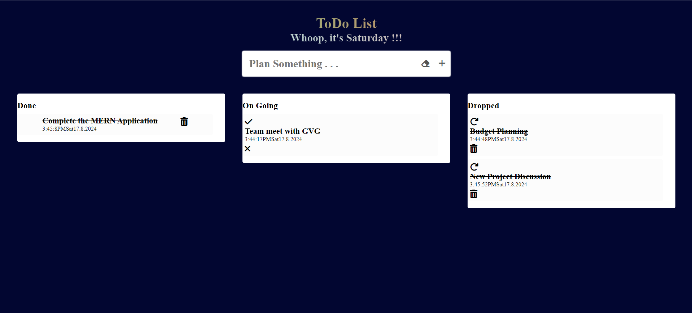
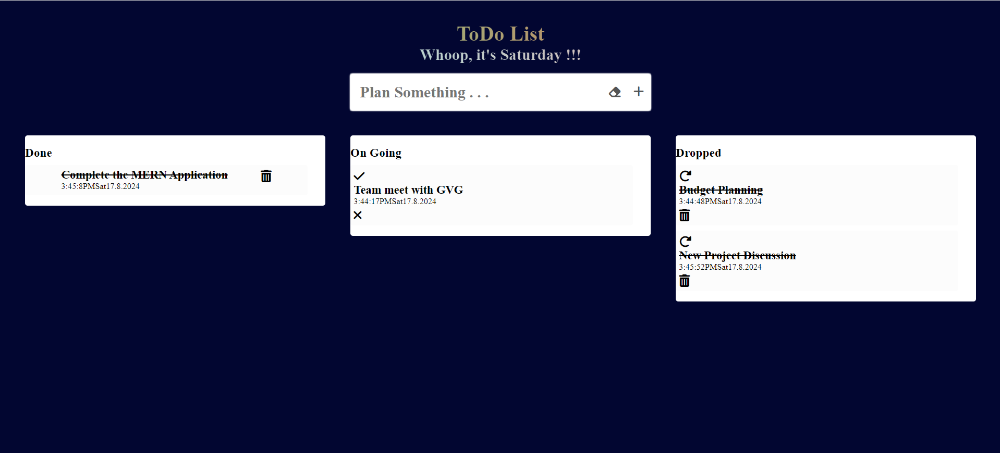

TODO App
This ToDo Application is developed using React. It offers a structured and interactive interface where users can manage tasks with ease. Users can add new tasks, mark tasks as done, drop tasks, retrieve dropped tasks, and remove tasks permanently. The application utilizes local storage to save the state of the to-dos, ensuring persistence across sessions.
Technologies Used
- React: The core JavaScript library used for building the user interface.
- JavaScript ES6: Used for writing modern and clean code, utilizing features like arrow functions and destructuring.
- CSS: Used for styling the application to provide a visually appealing user experience.
- Font Awesome: Icon library used for incorporating various icons (e.g., checkmark, trash, redo) in the UI.
Techniques Implemented
- State Management: Utilizes React's useState hook to manage the state of tasks and input fields.
- Effect Hook: Uses the useEffect hook to synchronize the tasks' state with localStorage, ensuring that tasks persist across page reloads.
- Conditional Rendering: The application uses conditional rendering to display tasks in different sections (e.g., Done, On Going, Dropped) based on their status.
- Local Storage: Data persistence is achieved through local storage, allowing tasks to be saved and retrieved between sessions.
- Event Handling: Implements various event handlers (e.g., onClick, onChange, onSubmit) to handle user interactions, such as adding, removing, and updating tasks.
- Dynamic Date and Time: The application displays the current day and uses dynamic time formatting for task timestamps.
- Confirmation Dialogs: Utilizes window.confirm to prompt the user before permanently deleting or retrieving tasks, ensuring user actions are deliberate.